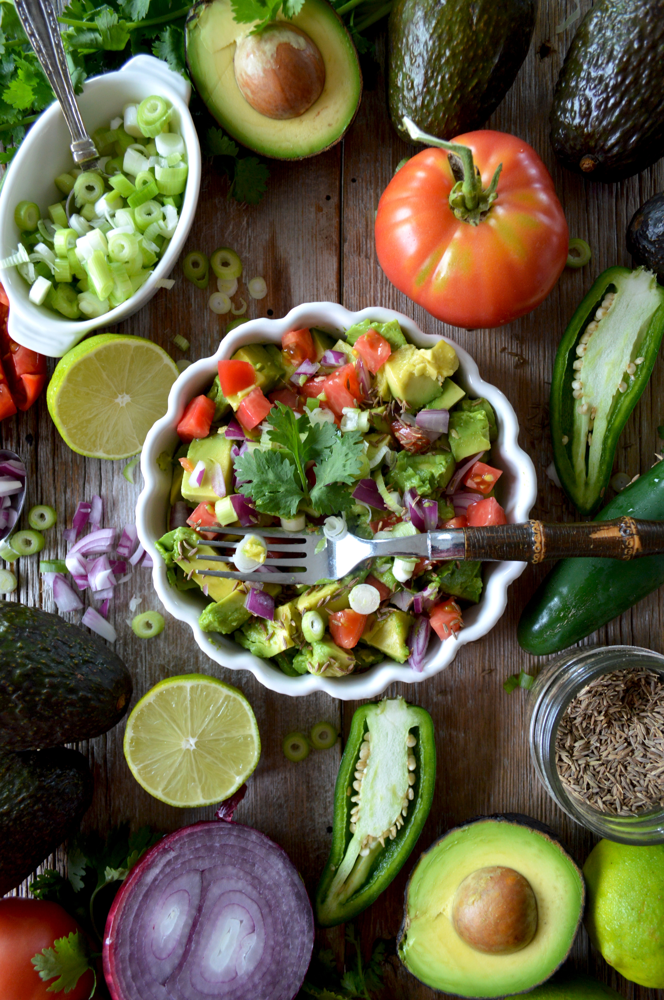

- GUACAMOLE
- BURRITO
- TACO
GUACAMOLE

This is how you make a great Guacamole Watch and Learn!
Ingredients
- One Avocado
- Quater of Chopped Onion
- Half of Chopped Tomato
- One table spoon of Saults
- Little bit of peppers
- Lime juice
- Silantro
Method
1.Cut the avocado in half and take the seed out.
Scratch the magin with a spoon tring to take the all green avocado out of the peels
2.Smash the green avocado with a smasher with mutiple holes on it
and put the chopped onions, tomatoes, Saults, Peppers, Lime juice, Silantro.
3.Mix all with a spoon.